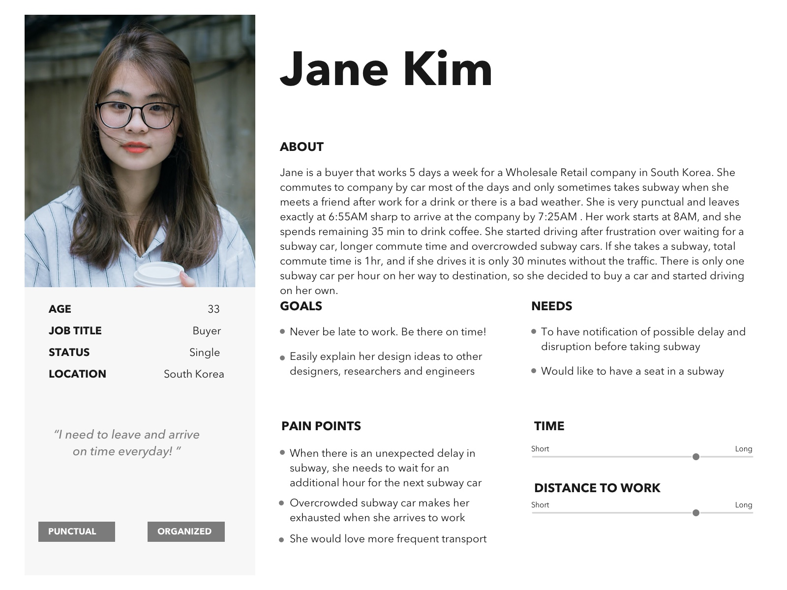
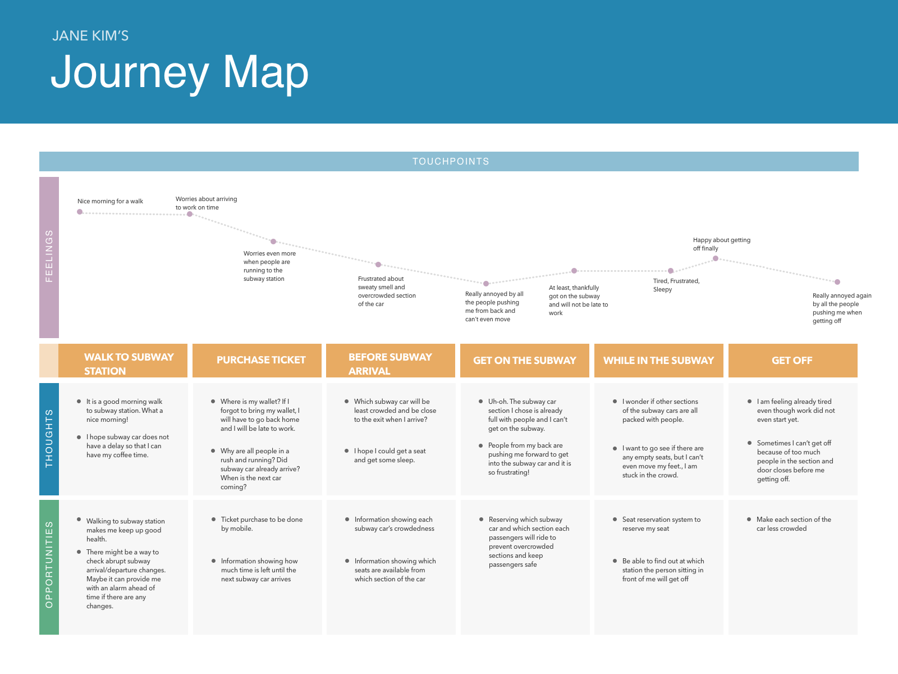

Rethinking the Public Transit Experience
Photo by Renz from Pexels
Photo by Lukas Hartmann from Pexels
At Glance
Length: 3 weeks
Tool: Sketch
Role: Researching, Designing, Prototying (Individual Project)
Background
Everyday, millions of people rely on public transportation to get around the city. How can we improve the transit user experience and make the whole experience delightful and more convenient for people?
Goal
The goal of this project is to understand the pain points of riders of public transportation systems and design for their experience.
Methods
- Semi-structured interviews with commuters
- Storyboarding
- Persona
- User Journey
Interview Questions
To get an idea of what experience to design for, I first needed to understand what challenges people face when using current transporation systems. To do this, I interviewed five people in the Seoul Metropolitan area who have extensive experience using the public transit system. Some example questions I asked included:
- "What is the most important thing that matters to you when finding a transportation method and getting around?"
- "If any, what applications do you use in finding transportation and getting around?"
- "What type of features can we have to improve your experience of using public transportation?"
Usability Testing
- I found potential participants with extensive experience using the public transit system
- Explain to them about my working project and asked for permission to observe them and ask for about 15min of interview afterwards after using public transit system
- Let participants to think out loud while using public transit system
- Jot down notes about the observation, painpoints and goal
- Thank them for their help
Identifying User Needs
Persona
Based on collected information from interviews and observations, I generated two user personas as below.

Journey Map
In addition to the personas, I also created user journey map to better understand and empathize and synthesize the observations. This journey map graphically represents each touchpoints' feelings, thoughts and opportunities for public transportation user.

After talking to people in the potential target population, I discovered many interesting findings that can be translated into design insights. I summarized these findings below.
- It is difficult to decide which section of the subway platform will have a less crowded subway car.
- It is hard to find an empty seat upon entering the car.
- There is no way of knowing when people will leave their seats.
Storyboard Design
I quickly sketched these insights in a storyboard, which is a great method for portraying the problem context and narrative of the expected user experience for the proposed solution. My storyboards focused on two experiences: car-searching and seat-finding.
Car-Searching Problem
During rush hour, people have very little insight into which subway cars are full or less crowded. To find a car with less crowdedness, people need to scan each of the sections really quickly as the subway is entering. Some tend to run to the less crowded section for more comfort. Instead, an application which shows users crowdedness on each subway cars could potentially provide riders more convenience during transit.
It is the operator's responsibility to keep everyone safely boarded. Often times, people get stuck between the closing door and accidents can happen. To prevent this accident from happening, subway operators will repeatedly announce safety warnings to people and suggest that they board on a less crowded car. However, operators have no information about which cars are full or vacant. An application that shows the occupancy level in each car can support the operator's job of reallocating people to vacant cars..
Seat-Finding Problem
Seats in subway cars are a scarce resource, and riders need to find empty seats by looking around all the subway cars. They might even stand in front of the seated person, waiting for them to leave their seats. However, unless the person waiting to be seated asks the seated person which station they are getting off, there is no idea how much waiting time will there be. A mobile app that enables riders to reserve seats in advance will provide a huge convenience in their transit experience.
By having a seat booking application, people can reserve their seat in advance and simply walk to the subway car. This can be especially convenient for people with injuries or physical challenges. Through installed weight sensors on each seat, the app can detect which seats are currently vacant and guide riders to the empty seat. It can also predict which seats will be vacant depending on which station the rider will arrive at.